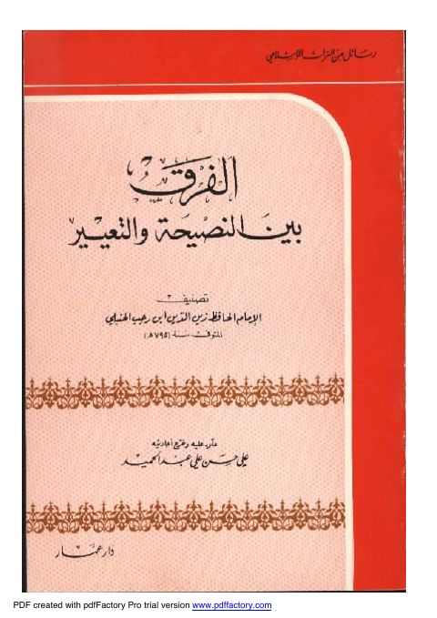

Downloads need an internet connection.
الفرق بين النصيحة والتعيير
Authors: ابن رجب الحنبلي
Editors: علي حسن علي عبد الحميد
Publishers: دار عمار
**▫️ العنوان: الفرق بين النصيحة والتعيير** ▪️ المؤلف: #زين_الدين_أبن_رجب_الحنبلي ▫️ المحقق: #علي_حسن_علي_عبد_الحميد ▪️ الناشر: #دار_عمار ▫️ تاريخ النشر: 1409 -1988 ▪️ بلد النشر: عمان، #الأردن ▫️ الطبعة: 2 ▪️ عدد الأجزاء: 1 ▫️ الصفحات: 28 ▪️ نوع الوعاء: #كتاب ▫️ التصنيف الرئيسي: #الزهد_والرقائق ۪